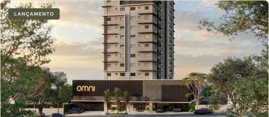

— Projeto 01 / 03
Lançamento
OMNI Espelho D’Água
Rio Verde, GO
Encontre o equilíbrio entre a agitação da cidade e a tranquilidade do seu refúgio. Um design que inspira, uma estrutura que otimiza o tempo e um lugar que facilita a sua rotina. Viva com mais liberdade. Viva com total tranquilidade.
Última atualização · 14 mai 2026
Ver projeto completo